Activity: Model with a coordinate system
Overview
This activity demonstrates the process of creating features using a coordinate system.
Click here to download the activity file.
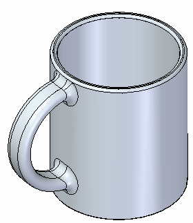
Objectives
Create handle on a coffee cup using coordinate system.
-
Open cup.par.
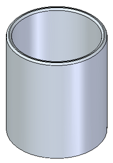
On the Home tab→Planes group, choose the Coordinate System command.
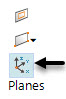
Place the coordinate system on the outside cylindrical surface of the cup. Do not be concerned with exact location. Press the Escape key when it places.
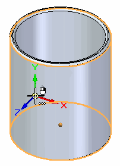
Place a dimension between the coordinate system’s X-axis and the edge on the top of cup.
-
Choose the Lock Dimension Plane option .
Lock to the XY plane on the coordinate system on the cylindrical face.
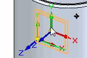
-
Select the X-axis on the coordinate system.
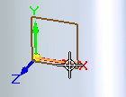
-
Select the edge on the top of the cup.
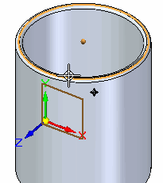
-
Change the dimension value to 52 mm.
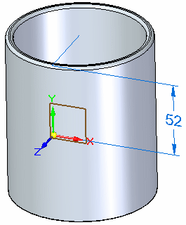
Press F3 to unlock the dimension plane and then F5 to clear its display.
Draw a rectangle on the coordinate system's XZ plane. Press the N key until the (green) edge shown on the plane highlights and then press the F3 key to lock to that plane.
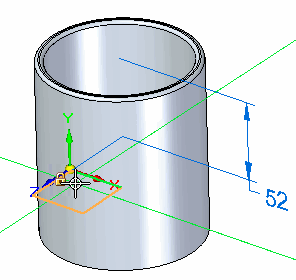
On the View tab→Views group, choose the Sketch View command. Add dimensions as shown.
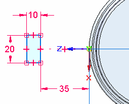
Press F3 to unlock the sketch plane. Press Ctrl+I to return to the ISO view.
Choose the Revolve command to generate the handle. Select the rectangle as the sketch. Accept it and then select the coordinate system X-axis as the rotation axis. You may need to use QuickPick to locate the X-axis.
In QuickPick, the X-axis name is Edge (Coordinate System 3) - or similar.
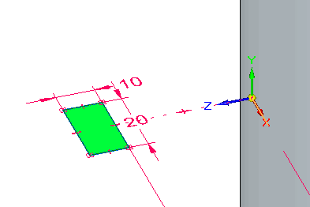
On the command bar, clear the Create Live Section option .
On the command bar, set the Symmetric option , and type an angle of 183 degrees. Press the Enter key.
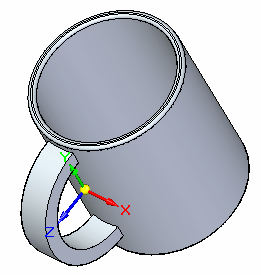
Save the file.
If you wish to aesthetically finish the handle, you can add rounds to the edges.
First add a 5 mm round to the handle’s four edges and then right-click. Add a 7 mm round to the two handle/cup interface edges and then right-click.
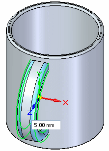
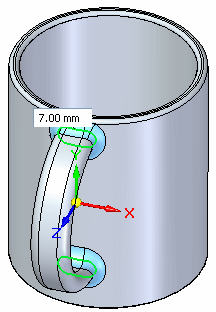
Turn off the display of the coordinate system entry in the Coordinate Systems collector.
Save and close this file.
In this activity you learned how to create a coordinate system to use to draw a sketch. The coordinate system was positioned with dimensions.
-
Click the Close button in the upper–right corner of this activity window.